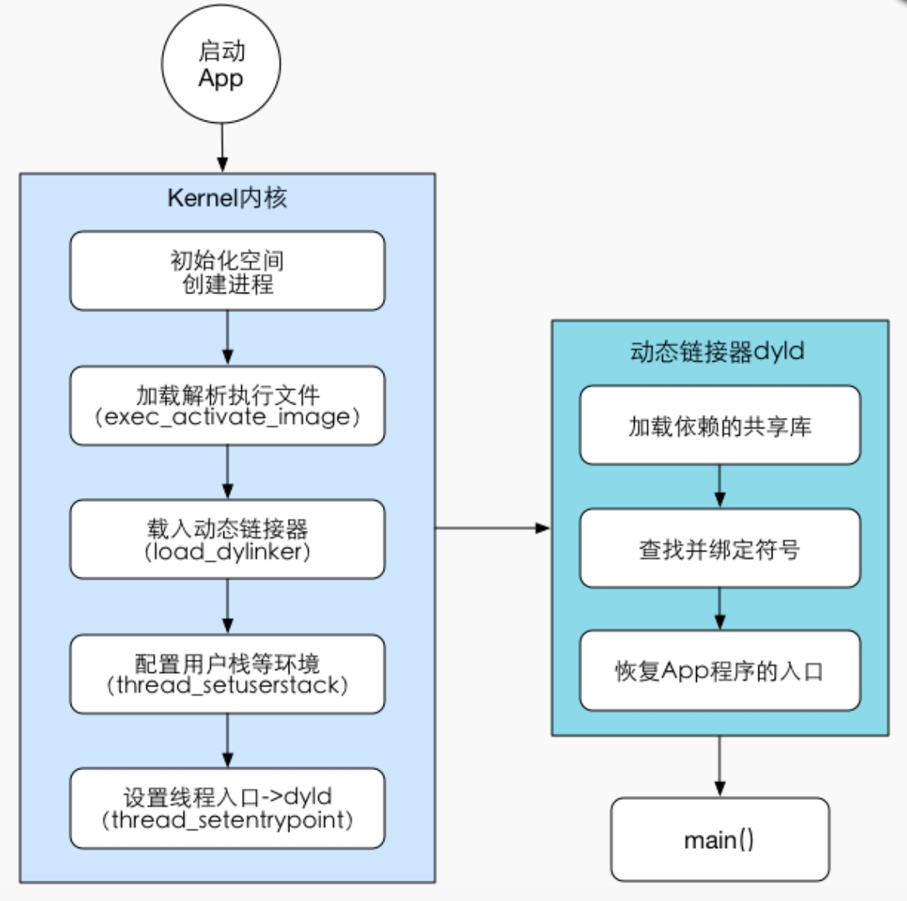

冷启动优化
时间统计方案耗时统计
冷启动的常规方案
影响冷启动的原因
T1
加载系统dylib和可执行文件的时间。
pre-main

T2
从main到applicationWillFinishLaunching结束的时间。

该阶段各个时期的任务以及优化方法：

1）解析Info.plist
加载相关信息，例如如闪屏
沙箱建立、权限检查
2）Mach-O加载
如果是胖二进制文件，寻找合适当前CPU类别的部分
加载所有依赖的Mach-O文件（递归调用Mach-O加载的方法）
定位内部、外部指针引用，例如字符串、函数等
执行声明为__attribute__((constructor))的C函数
加载类扩展（Category）中的方法
C++静态对象加载、调用ObjC的 +load 函数
3）程序执行
调用main()
调用UIApplicationMain()
调用applicationWillFinishLaunching
Mach-O
Mach-O 是针对不同运行时可执行文件的文件类型。

文件类型：
Executable： 应用的主要二进制
Dylib： 动态链接库（又称 DSO 或 DLL）
Bundle： 不能被链接的 Dylib，只能在运行时使用 dlopen() 加载，可当做 macOS 的插件。
Image： executable，dylib 或 bundle
Framework： 包含 Dylib 以及资源文件和头文件的文件夹
Mach-O 镜像文件
Mach-O 被划分成一些 segement，每个 segement 又被划分成一些 section。
segment 的名字都是大写的，且空间大小为页的整数。页的大小跟硬件有关，在 arm64 架构一页是 16KB，其余为 4KB。
section 虽然没有整数倍页大小的限制，但是 section 之间不会有重叠。
几乎所有 Mach-O 都包含这三个段（segment）： TEXT,DATA 和 __LINKEDIT：
__TEXT 包含 Mach header，被执行的代码和只读常量（如C 字符串）。只读可执行（r-x）。
__DATA 包含全局变量，静态变量等。可读写（rw-）。
__LINKEDIT 包含了加载程序的『元数据』，比如函数的名称和地址。只读（r–）。
Mach-O Universal 文件
FAT 二进制文件，将多种架构的 Mach-O 文件合并而成。它通过 Fat Header 来记录不同架构在文件中的偏移量，Fat Header 占一页的空间。
按分页来存储这些 segement 和 header 会浪费空间，但这有利于虚拟内存的实现。
什么是image
1.executable可执行文件 比如.o文件。
2.dylib 动态链接库 framework就是动态链接库和相应资源包含在一起的一个文件夹结构。
3.bundle 资源文件 只能用dlopen加载，不推荐使用这种方式加载。
除了我们App本身的可行性文件，系统中所有的framework比如UIKit、Foundation等都是以动态链接库的方式集成进App中的。
什么是ImageLoader
image 表示一个二进制文件(可执行文件或 so 文件)，里面是被编译过的符号、代码等，所以 ImageLoader 作用是将这些文件加载进内存，且每一个文件对应一个ImageLoader实例来负责加载。
两步走：在程序运行时它先将动态链接的 image 递归加载 (也就是上面测试栈中一串的递归调用的时刻)。 再从可执行文件 image 递归加载所有符号。
冷启动和热启动
冷启动
应用首次启动。即后台线程中未有当前打开的应用，所有的资源都需要加载并初始化。
热启动
应用非首次启动。即后台线程中保留有当前应用，应用的资源在内存中有保存。
启动时间分析
1）开启时间分析功能
在Xcode的菜单中选择Project→Scheme→Edit Scheme...，然后找到 Run → Environment Variables →+，添加name为DYLD_PRINT_STATISTICS value为1的环境变量。

1. load dylibs image
通常的，一个App需要加载100到400个dylibs， 但是其中的系统库被优化，可以很快的加载。 针对这一步骤的优化有：
- 减少非系统库的依赖
- 合并非系统库
- 使用静态资源，比如把代码加入主程序
2. rebase/bind
优化该阶段的关键在于减少__DATA segment中的指针数量。我们可以优化的点有：
- 减少Objc类数量， 减少selector数量
- 减少C++虚函数数量
- 转而使用swift stuct（其实本质上就是为了减少符号的数量）
3. main()调用之前的耗时我们可以优化的点
- 减少不必要的framework，因为动态链接比较耗时
- check framework应当设为optional和required，如果该framework在当前App支持的所有iOS系统版本都存在，那么就设为required，否则就设为optional，因为optional会有些额外的检查
- 合并或者删减一些OC类，关于清理项目中没用到的类，使用工具AppCode代码检查功能，查到当前项目中没有用到的类如下：
- 删减一些无用的静态变量
- 删减没有被调用到或者已经废弃的方法
- 将不必须在+load方法中做的事情延迟到+initialize中
- 尽量不要用C++虚函数(创建虚函数表有开销)
4. main()调用之后的加载时间
在main()被调用之后，App的主要工作就是初始化必要的服务，显示首页内容等。而我们的优化也是围绕如何能够快速展现首页来开展。 App通常在AppDelegate类中的
- (BOOL)Application:(UIApplication *)Application didFinishLaunchingWithOptions:(NSDictionary *)launchOptions
方法中创建首页需要展示的view，然后在当前runloop的末尾，主动调用
- CA::Transaction::commit
- 完成视图的渲染。
而视图的渲染主要涉及三个阶段：
- 准备阶段 这里主要是图片的解码
- 布局阶段 首页所有UIView的 - (void)layoutSubViews( ) 运行
- 绘制阶段 首页所有UIView的 - (void)drawRect:(CGRect)rect 运行再加上启动之后必要服务的启动、必要数据的创建和读取，这些就是我们可以尝试优化的地方
因此，对于main()函数调用之前我们可以优化的点有：
- 不使用xib，直接视用代码加载首页视图
- NSUserDefaults实际上是在Library文件夹下会生产一个plist文件，如果文件太大的话一次能读取到内存中可能很耗时，这个影响需要评估，如果耗时很大的话需要拆分(需考虑老版本覆盖安装兼容问题)
- 每次用NSLog方式打印会隐式的创建一个Calendar，因此需要删减启动时各业务方打的log，或者仅仅针对内测版输出log
- 应用启动时发送的所有网络请求，是否可以统一在异步线程请求
- 具体优化点
因此，针对于今日头条这个App我们可以优化的点如下：
- 纯代码方式而不是storyboard加载首页UI。
- 对didFinishLaunching里的函数考虑能否挖掘可以延迟加载或者懒加载，需要与各个业务方pm和rd共同check 对于一些已经下线的业务，删减冗余代码。
- 对于一些与UI展示无关的业务，如书城礼包,单本书礼包的获取、图片最大缓存空间设置等做延迟加载，对实现了+load() 方法的类进行分析，尽量将load里的代码延后调用。
6.iOS App启动过程
参考 http://blog.csdn.net/justinjing0612/article/details/43969681
(1) 链接并加载Framework和static lib
(2) UIKit初始化
(3) 应用程序callback
(4) 第一个Core Animation transaction
6.1 链接并加载Framework及static lib时需要注意：
1.每个Framework都会增加启动时间和占用的内存
2.不必要的Framework，不要链接
3.必要的Framework，不要设置为Optional
4.只在使用在Deployment Target之后发布的Framework时，才使用Optional（比如你的Deployment Target是iOS 3.0，需要链接StoreKit的时候）避免创建全局的C++对象
6.2 初始化UIKit时需要注意：
1.字体、状态栏、user defaults、main nib会被初始化
2.保持main nib尽可能的小
3.User defaults本质上是一个plist文件，保存的数据是同时被反序列化的，不要在user defaults里面保存图片等大数据
6.3 应用程序的回调
1.application:willFinishLaunchingWithOptions:
2.恢复应用程序的状态
3.application:didFinishLaunchingWithOptions:
- WWDC 之优化 App 启动速度
参考 https://juejin.im/entry/57c3d611a633bd005d7b3b62
7.1 对动态库加载的时间优化
每个App都进行动态库加载,其中系统级别的动态库占据了绝大数,而针对系统级别的动态库都是经过系统高度优化的,不用担心时间的花费.开发者应该关注于自己集成到App的那些动态库,这也是最能消耗加载时间的地方.对此Apple建议减少在App里开发者的动态库集成或者有可能地将其多个动态库最终集成一个动态库后进行导入, 尽量保证将App现有的非系统级的动态库个数保证在6个以内.
7.2 减少Appp的Objective-C类,分类和的唯一Selector的个数
这样做主要是为了加快程序的整个动态链接, 在进行动态库的重定位和绑定(Rebase/binding)过程中减少指针修正的使用,加快程序机器码的生成.
7.3 减少Objc运行初始化的时间花费
主要是类的注册,分类的注册,唯一选择器的存在,以及涉及子父类内存布局的Non Fragile ivars偏移的更新,都会影响Objective-C运行时初始化的时间消耗.
7.4 使用initialize方法进行必要的初始化工作
用+initialize方法替换调用原先在OC的+load方法中执行初始代码工作,从而加快所有类文件的加载速度.
结尾
1.使用DYLD_PRINT_STATISTICS测试启动加载时间
2.减少自定义的动态库集成
3.精简原有的Objective-C类和代码
4.移除静态的初始化操作
5.使用更多的Swift代码
- Facebook iOS App如何优化启动时间
Copyright © 2015 Powered by MWeb, Theme used GitHub CSS.